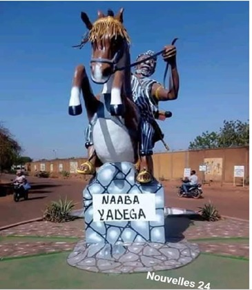
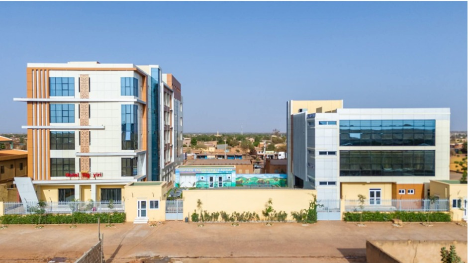
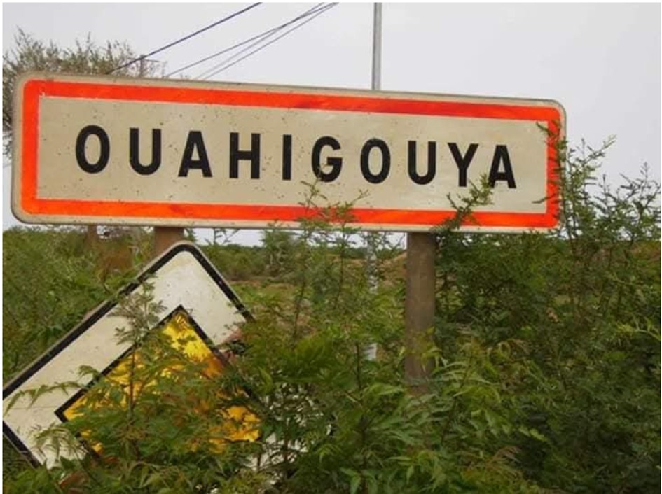
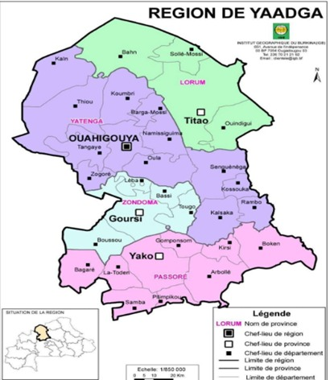
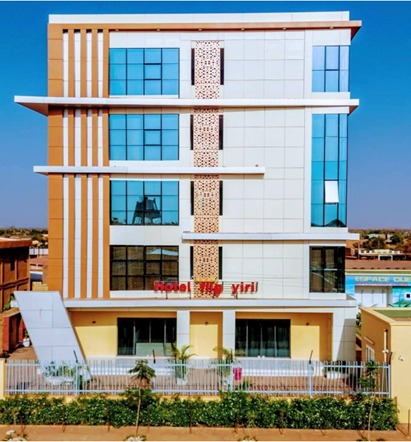

« La résistance du Yatenga »
Pays : Burkina Faso
Statut : Région
Provinces : 4
Départements : 31
Chef-lieu : Ouahigouya
Gouverneur : Thomas Sampa (depuis le 16 janvier 2025)
Code ISO 3166-2 : BF-10
Code INSD : 09
Population (2024) : 1 939 300 hab.
Densité : 120 hab./km²
Coordonnées : 13°15'N, 2°15'O
Superficie : 16 207 km²
Fuseau horaire : UTC+0
Indicatif téléphonique : +226

Présentation
Yaadga (anciennement région du Nord) est la région historique du puissant royaume Mossi du Yatenga, fondé au XVᵉ siècle. Ouahigouya, son chef-lieu, est une ville de résistance, célèbre pour avoir repoussé les envahisseurs. Les sites de Laongo, avec ses sculptures monumentales, attirent les visiteurs du monde entier. En juillet 2025, la région a été renommée Yaadga dans le cadre d'un nouveau redécoupage territorial, toutes les circonscriptions ayant reçu une dénomination en langue endogène.
La dénomination Yaadga, issue du mooré, signifie « pays du Nord » ou « terre des ancêtres ». Ce nom symbolise un attachement profond à l’histoire, à la royauté et à l’héritage culturel de cette partie du pays. Il réaffirme la place du Yatenga, l’un des plus illustres royaumes mossi, dont le palais royal de Ouahigouya reste un témoin vivant des traditions séculaires. Le Naaba Kiiba, souverain actuel, incarne cette continuité entre mémoire, autorité traditionnelle et influence culturelle.

La région s’impose comme un bastion de la culture burkinabè, avec des pratiques artistiques vivantes : danses traditionnelles (warba, liwaga, samogo), musiques rituelles au balafon et au bendré, contes, masques et chants transmis de génération en génération. Ces éléments rythment les grands événements : cérémonies royales, funérailles coutumières, mariages ou fêtes communautaires. L’artisanat, lui aussi, témoigne de cette vitalité : poterie, tissage, maroquinerie et travail du fer font vivre des centaines d’artisans locaux.

Un patrimoine culturel et touristique à fort potentiel
Au-delà de la culture immatérielle, la région de Yaadga recèle de sites patrimoniaux encore peu explorés par le grand public. À commencer par le palais royal de Ouahigouya, dont l’organisation architecturale, les espaces sacrés et les objets rituels attirent chercheurs et visiteurs. Le site de Zogoré, les anciennes fortifications du Yatenga, ainsi que les lieux de culte ancestraux, pourraient constituer le socle d’un circuit patrimonial structuré. Le tourisme communautaire offre aussi de belles perspectives : immersion dans les villages peuls ou mossi, participation aux activités agricoles, découverte des marchés traditionnels ou initiation aux danses locales. Ce tourisme de proximité met en valeur l’hospitalité locale et les savoir-faire ruraux
Entre écotourisme et tourisme mémoriel
Les paysages naturels de Yaadga permettent de développer une offre d’écotourisme durable. Les zones boisées de Thiou, les berges de la rivière Nakanbé, les collines de Tangaye et les plaines semi-arides du Sahel offrent des décors propices à la randonnée, à l’observation de la faune et à la photographie. La faune locale oiseaux, reptiles, petits mammifères est encore relativement préservée. Des sentiers d’interprétation écologique et des circuits de safaris doux pourraient renforcer l’attrait touristique tout en préservant l’environnement. Le tourisme mémoriel, quant à lui, pourrait s’appuyer sur les grands faits historiques du Yatenga et les anciens itinéraires des guerriers mossi.

Une hôtellerie locale en expansion
Face à ces potentiels, plusieurs villes de Yaadga, notamment Ouahigouya, voient émerger une offre hôtelière en pleine évolution : hôtels modernes, auberges familiales, maisons d’hôtes décorées dans le style traditionnel. Des jeunes entrepreneurs misent sur l’accueil touristique, la restauration à base de produits locaux et la création d’expériences culturelles immersives. Dans les zones rurales, des projets de campements touristiques portés par les communautés ou des ONG sont à l’étude. Ces initiatives, souvent écoresponsables, visent à rapprocher les visiteurs de la vie locale tout en générant des revenus pour les populations

Yaadga, un nom, une fierté, une promesse La création de la région de Yaadga n’est pas qu’une réforme administrative : c’est l’opportunité d’une relecture profonde de l’identité culturelle et territoriale du Nord du Burkina. Avec ses royaumes vivants, ses pratiques artistiques dynamiques, son hospitalité légendaire et son potentiel touristique encore peu exploité, Yaadga s’affirme comme une région porteuse d’avenir. Rendre visible son patrimoine, accompagner les initiatives locales, structurer le tourisme et soutenir les arts : voilà les clés pour faire de Yaadga un véritable laboratoire de rayonnement culturel et économique. Une région qui allie la mémoire de ses ancêtres à l’innovation de sa jeunesse et qui mérite plus que jamais d’être découverte, racontée et célébrée
Tourisme & Culture
Ressources naturelles
Potentiel agricole 🌾
Potentiel éducatif 🏫
Potentiel commercial 🛒
Artisanat traditionnel
Spécialités culinaires
Galerie photos
Carte de situation
Provinces
Le saviez-vous ?
Le royaume du Yatenga fut fondé au XVᵉ siècle par Naaba Yadéga, fils du roi Mossi Naaba Wubri. Il résista victorieusement aux tentatives de conquête du royaume peul du Macina au XIXᵉ siècle, d'où son surnom de "terre de résistance". En juillet 2025, la région a été renommée Yaadga, une dénomination en langue endogène.